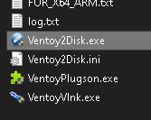
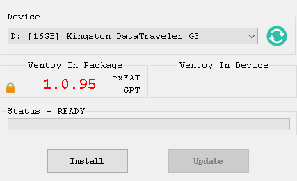
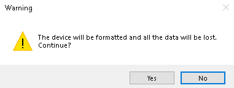

In this tutorial, I'll take you through how to create a flash drive with multiple operating systems using Ventoy,
as well as some tips for how to set up your multiboot flash drive.
So what even is Ventoy? Well, Ventoy is a cool little program that creates a bootable flash drive similarly to apps
such as Rufus or Etcher, but unlike Rufus and Etcher, Ventoy doesn't format the entire drive for a single
ISO file. Instead, Ventoy lets you include multiple ISOs on a single drive and boot them all (albeit not at the same time)
off of that single drive! This is especially advantageous when it comes to testing different Linux distros on real hardware,
as you won't have to format a new flash drive for every single ISO or, worse yet, keep reformatting the same drive and
flashing a new ISO onto it every time. Which is exactly why I personally use Ventoy for my bootable flash drive needs.
Without further ado, here's how to create a multiboot flash drive with Ventoy:
1. Download the latest version of Ventoy (1.0.95 at the time of writing) from their website:
https://www.ventoy.net/en/download.html
2. Plug in your flash drive and open Ventoy. Depending on your OS, the executable file might have a different name -
on Windows, it's Ventoy2Disk.exe.

3. Select the device you wish to install Ventoy on - i.e. the flash drive you just plugged in - configure any settings
you may wish to change and click the Install button.

4. The program will throw up a warning about formatting the drive and all data on it being lost. If at this point, you're
sure you've backed up everything important or there's absolutely nothing on the drive that you mind losing, click Yes.

5. When Ventoy is finished installing on the flash drive, you can import any ISOs you may want into the drive's root
directory. If you plug the flash drive into another PC and access the boot menu, you can select the Ventoy drive and it will
display its own boot menu with a list of the ISOs included on the drive. Choose one and hit Enter to boot into its respective
operating system.
When it comes to the settings in Ventoy, they are all accessible from the Option menu in the toolbar. The only two settings that
should actually matter as far as target hardware is concerned are "Secure Boot Support" and "Partition Format". Depending on the
age of the system where you intend to use your Ventoy flash drive, you may need to disable the former, as very old systems don't
support secure boot. As for the partition format, whether you should go for MBR or GPT depends on some factors. For modern systems,
I would generally recommend GPT, especially if you intend to boot into Arch-based Linux distros from the flash drive, as they
generally dislike MBR in my experience.
That concludes this Ventoy multiboot flash drive tutorial.